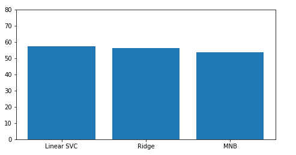

Why this reccomendation application?
Mobile phone is the widely used devices and everybody gets confused while buying new one. While Searching for which device to by people gets confused with lot of reviews and rating.
So, to clear the confusion I made a application which will help the user to find the mobile phone from the review and rating score.
The user needs to enter revies and rating and the machine learning classifier algorithm will do a task and suggest the mobile phones to user.
Dataset:
- 1.4 million cell phone reviews
- https://www.kaggle.com/masaladata/14-million-cell-phone-reviews
Libraries used in project
- train_test_split:To split data in to train and test.(I have split data in to 80:20 ratio)
- TfidfVectorizer:Convert a collection of raw documents to a matrix of TF-IDF features.
- TfidfTransformer:Transform a count matrix to a normalized tf or tf-idf representation
- MultinomialNB: The multinomial distribution normally requires integer feature counts. However, in practice, fractional counts such as tf-idf may
- RidgeClassifier:This classifier first converts the target values into {-1, 1} and then treats the problem as a regression task (multi-output regression in the multiclass case).
- LinearSVC:Similar to SVC with parameter kernel=’linear’, but implemented in terms of liblinear rather than libsvm, so it has more flexibility in the choice of penalties and loss functions and should scale better to large numbers of samples.
- accuracy_score:In multilabel classification, this function computes subset accuracy: the set of labels predicted for a sample must exactly match the corresponding set of labels in y_true.
- nltk:1.word_tokenize2.stop words
Method:
- Used pandas datafram to read dataset.(data.csv)
- .Perfomed data pre processing.
Dara preprocessing is most crucial task in text analysis as well as in deep learning tasks. If you do not perform any pre processing on your raw data, then it will affect your model's performance and to your final result. Generally, in this step we remove emojis, stop words, some rare occurring words from text. Also lower capitalization and tokenization are performed. In preprocessing, I removed all the rows having no values in comment column, as without comment value there is nothing to predict. To remove stop words from comments, first, I tokenized those comments using tokenizer tool provided by Natural Language toolkit (NLTK), and then removed those stop words. In nltk, there is one class "corpus" which contains list of these stop words. Along with them, comments are also converted into lower alphabets using lower() function.
- Data Visualization:For data Visualization I have used matplotlib, seaborn libraries. Data is postulated by heatmap, bar graph.
- Divide data in to train and test. For this I have used Train-Test-Split function.
- Model for classification.: From many classification models like:Naive Bayes, Support vector machine, random forest, ridge regression, linear regression, etc. I have used linear support vector machine, Navie bayes and rigid classifier.
- Performance evaluation of algorithms: We must know how our algorithm is working. For that purpose, some accuracy measures, error measurement techniques are used. Such as, confusion matrix, F1 score, precision, recall, etc.
Classifier explanation:
Multinomial Naive Bayes:
- MultinomialNB implements the naive Bayes algorithm for multinomially distributed data, and is one of the two classic naive Bayes variants used in text classification (where the data are typically represented as word vector counts, although tf-idf vectors are also known to work well in practice).
Ridge Classifier:
- The Ridge Classifier, based on Ridge regression method, converts the label data into [-1, 1] and solves the problem with regression method. The highest value in prediction is accepted as a target class and for multiclass data muilti-output regression is applied.
Linear Support vector machine:
- In machine learning, support-vector machines are supervised learning models with associated learning algorithms that analyze data for classification and regression analysis
Accuracy and F1 score for each classifer:
Linear Support Vector Machine
Accuracy: 57.73387725168446%
F1 Score: 0.58
Rigit Classifier
Accuracy: 56.466058578172984 %
F1 Score: 0.56
Naive Bayes
Accuracy: 53.6609066324426 %
F1 Score: 0.54
Result:

Difference over References:
- The reference I have used has not done much with dataset used torch for the accuracy and classification.
- Dataset has 6 csv files with data I have merged all the file to generate big dataset of size 921 megabutes.
- I used TFIDFVectorizer.
- I have used different classifer from skitlearn libraries for reccomendation analysis.
- Reference:https://www.kaggle.com/satyamkryadav/multiclass-mobilesentiments-83
Challenged Faced:
- The dataset was having different csv files I merges all files in single and made a dataset big enoughr for analysis.
- The dataset was too large for the systems we are using, so I need to pre process data first in order to use it for training and testing. For pre processing I had to use case lowering, tokenization, regular expression for alphabets, punctuation removal and removing stop words.
- The reference I used has torch but I used Clssifieres.
Contributions:
- I hae used three classifier and then used the best one with highest accuracy for the final reccomendation system.
- For my large dataset I have found linear support vector machine with highest accuracy so I uset it for final reccomendation.
- Saved model in local system for further any classification purpose.
- Made a application prototype for future use.https://proto.io/
Important Links:
References
- https://www.kaggle.com/satyamkryadav/multiclass-mobilesentiments-83
- Dataset Reading:https://towardsdatascience.com/loading-large-datasets-in-pandas-11bdddd36f7b
- Data preprocessing:https://scikit-learn.org/stable/modules/preprocessing.html
- Text classification:https://www.nltk.org/
- Vectorizing using Scikit-learn API's:https://scikit-learn.org/stable/modules/generated/sklearn.feature_extraction.text.TfidfVectorizer.html
- Vectorizing using Scikit-learn API's:https://scikit-learn.org/stable/modules/generated/sklearn.feature_extraction.text.TfidfTransformer.html
- Naive Bayes:https://scikit-learn.org/stable/modules/generated/sklearn.naive_bayes.MultinomialNB.html
- Linear support vector Machine:https://scikit-learn.org/stable/modules/generated/sklearn.svm.LinearSVC.html
- Rigid Classifier:"https://scikit-learn.org/stable/modules/generated/sklearn.linear_model.RidgeClassifier.html
- Confusion Matrix:https://scikit-learn.org/stable/modules/generated/sklearn.metrics.confusion_matrix.html
- Accuracy score:https://scikit-learn.org/stable/modules/generated/sklearn.metrics.accuracy_score.html
- F1 Score:https://scikit-learn.org/stable/modules/generated/sklearn.metrics.f1_score.html
- Heatmap: https://seaborn.pydata.org/
- Application Sketch:https://proto.io/